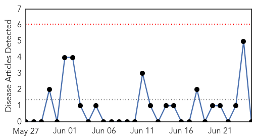
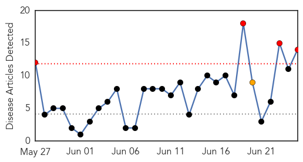
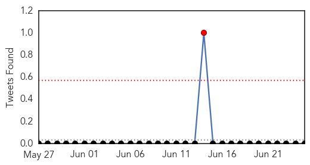
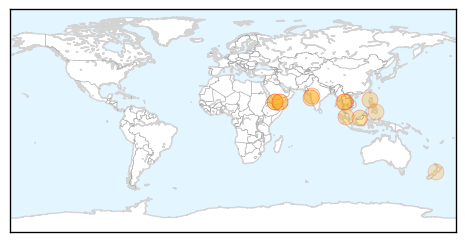
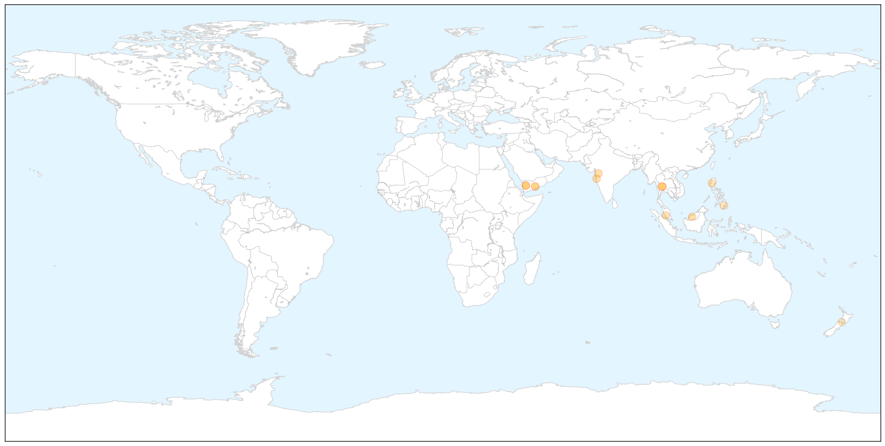
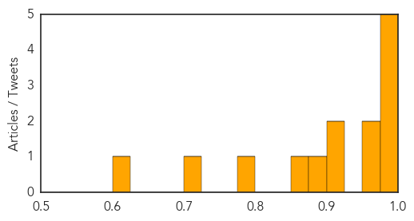

Pertussis
30-Day Web Trend
0 alerts, 0 warnings

30-Day Twitter Trend
0 alerts, 0 warnings

Article Locations


Article Confidences

Top Articles:
-
No articles found for Jun 25, 2015
Top Tweets:
-
No tweets found for Jun 25, 2015
Dengue Fever
30-Day Web Trend
4 alerts, 1 warnings

30-Day Twitter Trend
1 alerts, 0 warnings

Article Locations

X

Article Confidences
Top Articles:
- 0.999
- Yemen’s health situation ‘disastrous’, officials say
- 0.993
- Water-borne diseases on rise in city
- 0.986
- Health Groups Fighting To Prevent Dengue Outbreaks In Border Refugee Camps « Karen News
- 0.984
- After 1st dengue death this season in Mumbai, docs advise caution
- 0.979
- Question marks as organ-failure joins symptoms of dengue fever
- 0.975
- Over 8,000 Yemenis stricken with Dengue fever
- 0.952
- New, more fatal dengue strain leaves Health Ministry searching for answers
- 0.913
- Eighty Percent of Yemenis Dependent on Humanitarian Aid as Starvation, Dengue Fever Ravage Civilians
- 0.910
- Spike in dengue cases to last until end of year - Nation
- 0.877
- Health department promotes Dengue awareness - Philippines
- 0.874
- Malaysia General Business Sports and Lifestyle News
- 0.782
- Davao health office warns public vs diseases
- 0.704
- Kevin Hague Questions the Minister of Health on the health impacts of climate change « LiveNews.co.nz
- 0.622
- Yemen: UN releases emergency funding for relief efforts in crisis-torn country
Top Tweets:
-
No tweets found for Jun 25, 2015